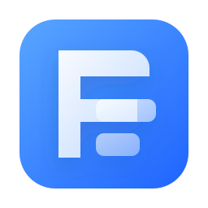

An interface with life
A coherent theme, welcome screen, and exclusive wallpapers give your desktop a refined identity from the first boot.

Fouad OSLive release · 2026.09.09
Fouad OS is a fast, beautiful system built on Arch Linux, with KDE Plasma ready for your work, creativity, or play from the very first moment.
Made for you
Every detail in Fouad OS is designed to feel familiar and smooth, without limiting your ambition.
A coherent theme, welcome screen, and exclusive wallpapers give your desktop a refined identity from the first boot.
A browser, file manager, media tools, and essential productivity apps are ready to use.
The modern Arch Linux foundation brings the latest packages and excellent performance to compatible hardware.
Customize the look, applications, and workflow with complete freedom. This is truly your system.
Current release
Download the ISO, try the system directly from a USB drive, or install it on your device in minutes.
Download Fouad OS 2026.09.094 GB minimum
8 GB recommended
32 GB minimum
64 GB recommended
Intel or AMD processor
with x86_64 support
Just three steps
Get the latest Fouad OS release using the download button.
Use Balena Etcher or Rufus to write the file to a USB drive with 8 GB or more.
Boot from the USB, then choose to try the system or open the installer from the desktop.
Your world. Your rules.